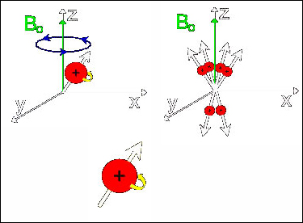
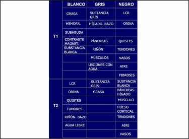

| Bases físicas de resonancia magnética nuclear |
|
| La resonancia magnética nuclear es la técnica radiológica basada en el empleo de las ondas electromagnéticas en la adquisición de imágenes.
Sus bases físicas se fundamentan en la propiedad específica de determinados elementos de reaccionar ante la energía de radiofrecuencia.
Los átomos con número impar de protones y neutrones (isótopos) si se someten a un campo magnético absorben energía de radiofrecuencia.
El núcleo atómico se subdivide en protones y neutrones y los electrones permanecen rotando en una órbita alrededor del núcleo. Según el número de protones situados en el número definiremos el denominado número atómico. No debe confundirse con el denominado peso atómico que se obtiene del cómputo de protones y neutrones. Se denominan isótopos a los elementos que comparten el número atómico aunque tienen diferente peso atómico.
En resonancia de emplea el átomo de hidrógeno por tratarse de un isótopo con número atómico impar y común en la naturaleza.
Los núcleos en su rotación generan un campo magnético alrededor con una orientación predeterminado por su eje de rotación. |
|
| El movimiento de precesión de los núcleos de los átomos de hidrógeno será al azar fuera de un campo magnético o coordinado con dicho campo si está bajo su influjo. Mediante una ecuación matemática se establecen una relación entre la frecuencia de precesión y el campo magnético aplicado, denominada ley de Larmor.
Este hecho es importante pero no aplicable en sí mismo por la RM. Lo que sí es muy importante es que si ahora se aplica una onda de radiofrecuencia con una energía concreta sobre esos núcleos magnetizados orientados en un eje concreto, se producirá una absorción de la energía aplicada y una emisión a posteriori al cesar el pulso de radiofrecuencia. En este proceso de absorción-pérdida de energía, el eje de precesión de los núcleos se orientará de forma perpendicular al eje del campo magnético inicial. Tras finalizarse el pulso de radiofrecuencia el eje de precesión de los núcleos se reorientará en la misma dirección del eje del campo magnético liberando energía. Este fenómeno de devolución de la energía previamente absorbida se denomina relajación. |
 |
|
Esta energía liberada de modo progresivo a medida que se produce la reorientación puede ser recogida y medida por un voltímetro. Este voltaje que se produce como consecuencia se denomina voltaje inducido o señal de resonancia magnética (Free Induction Decay). Mediante un complejo análisis matemático denominado "transformada de Fourier" se puede transformar la señal eléctrica creada en una imagen.
Si aplicamos esta secuencia a los organismos vivos, en función de la composición de los tejidos (agua o grasa) se originarán distinta frecuencia de resonancia.
Cada tejido se definirá por tiempo de retorno al nivel de energía basal de relajación longitudinal o T1 y un tiempo de relajación transversal o T2 concreto. Eso quiere decir que en función del tipo de estudio, potenciado en T1 o T2, los tejidos se manifestarán de una manera u otra en la imagen adquirida.
|
 |
|
Se han diseñado múltiples secuencias basándose en estas básicas o fundamentales mediante la aplicación de distintos pulsos de radiofrecuencia con ángulos de 90, 180º, etc. Estas secuencias son muy variadas y complejas para extendernos en su definición: Spin Eco, HASTE, FLAIR...
Mediante la transformación de la frecuencia de resonancia de los componentes de un tejido en un valor numérico, se establece una intensidad relativa en la escala de grises y se representa de manera bidimensional en una unidad básica o píxel. El conjunto de píxel conformará la imagen adquirida y podrá manipularse, archivarse en una base de datos o reconstruir mediante un software específico.
En términos generales los tejidos se manifestarán en la imagen proporcionando una intensidad de señal desde blanca a negra en secuencias T1 o T2 en función de su composición en iones hidrógeno (agua, grasa, aire). Se puede observar en la gráfica de la izquierda.
|
|
| » Volver |